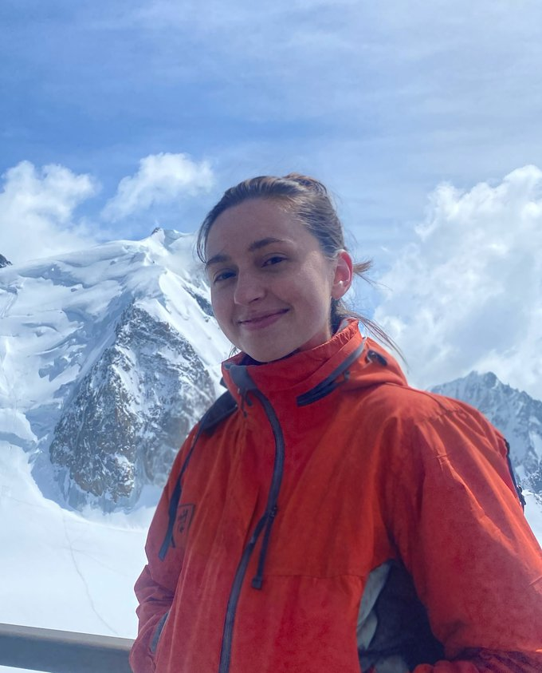

Astrophysics × Space Sustainability
Sarah Thiele
I'm a PhD candidate in the Department of Astrophysical Sciences at Princeton University, working with the HATPI Team and advised by Gáspár Bakos. I'm also a Junior Fellow of the Outer Space Institute.
My research sits where astronomy meets the growing human presence in orbit: measuring how satellite constellations affect wide-field observations, searching that same data for near-Earth asteroids, and advocating for policy that keeps orbital space usable.
